Источники картинок
Фотографии на карточках слов взяты с Wikimedia Commons (свободные лицензии: public domain, CC0, CC BY, CC BY-SA) и с фотостока Pixabay (Pixabay Content License). Файлы скачаны и уменьшены до квадратной плитки (кадрирование по центру) — оригиналы доступны по ссылкам в таблице.
Лицензии CC BY и CC BY-SA требуют указания автора — эта страница и есть такое указание. Если вы автор снимка и хотите изменить или убрать атрибуцию, напишите нам.
Всего изображений: 475. Обновлено: 21.08.2026.
| Слово | Автор | Лицензия | Источник | |
|---|---|---|---|---|
| aircraftвоздушное судно | Alan Wilson from Stilton, Peterborough, Cambs, UK | CC BY-SA 2.0 | файл на Commons | |
| airportаэропорт | POVar27 | CC BY-SA 3.0 | файл на Commons | |
| alarmбудильник | Sun Ladder | CC BY-SA 3.0 | файл на Commons | |
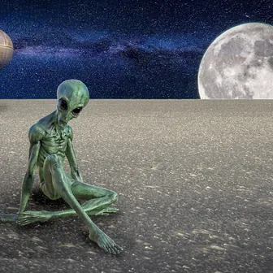 |
alienпришелец | Aliensworld | Pixabay Content License | страница на Pixabay |
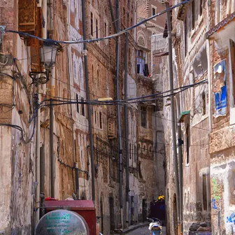 |
alleyпереулок | Rod Waddington from Kergunyah, Australia | CC BY-SA 2.0 | файл на Commons |
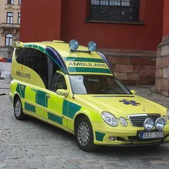 |
ambulanceскорая помощь | AleWi | CC BY-SA 4.0 | файл на Commons |
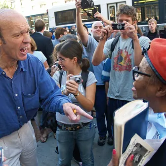 |
angerгнев | David Shankbone | CC BY-SA 3.0 | файл на Commons |
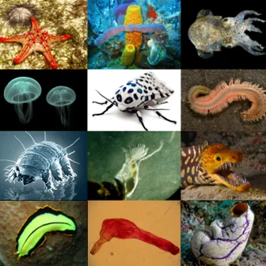 |
animalживотное | Chiswick Chap | CC BY-SA 4.0 | файл на Commons |
| applauseаплодисменты | Indigo Goat from Liverpool | CC BY 2.0 | файл на Commons | |
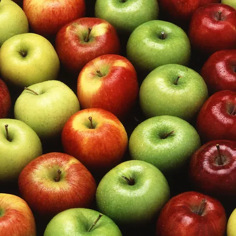 |
appleяблоко | Scott Bauer, USDA | Public domain | файл на Commons |
| architectureархитектура | Bruce Stokes on Flickr | CC BY-SA 2.0 | файл на Commons | |
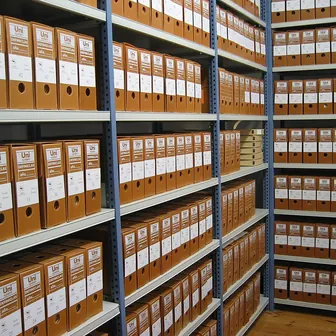 |
archiveархив | Archivo-FSP | CC BY-SA 3.0 | файл на Commons |
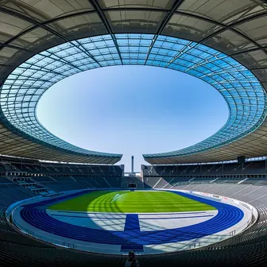 |
arenaарена | Pexels | Pixabay Content License | страница на Pixabay |
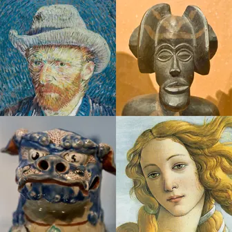 |
artискусство | User:Husky and h3m3ls , Mischa de Muynck and Niels | CC BY-SA 3.0 | файл на Commons |
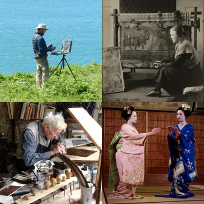 |
artistхудожник | OboeBlanket (as collagist), User:Llywelyn2000 , User:TitiaHouplain , and Joi Ito (as photographers) | CC BY-SA 4.0 | файл на Commons |
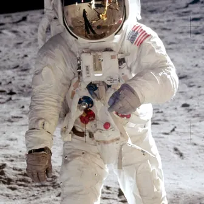 |
astronautастронавт | Aldrin_Apollo_11_original.jpg : NASA derivative work: Scott MacDonald ( talk ) | Public domain | файл на Commons |
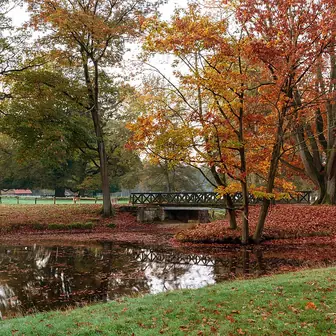 |
autumnосень | Original: Dietmar Rabich ( Derivative work: Sting ) | CC BY-SA 4.0 | файл на Commons |
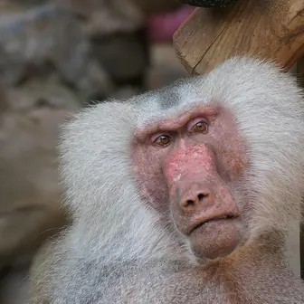 |
baboonпавиан | Die_Berlinerin | Pixabay Content License | страница на Pixabay |
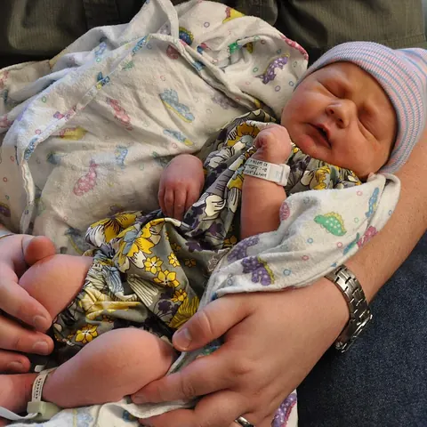 |
babyмалыш, младенец | Kimberly Vardeman | CC BY 2.0 | файл на Commons |
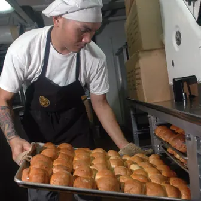 |
bakerпекарь | Petty Officer 3rd Class Paul J. Perkins, U.S. Navy | Public domain | файл на Commons |
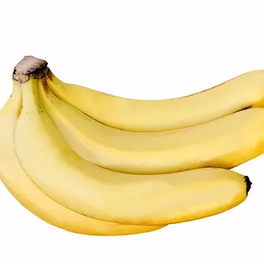 |
bananaбанан | Augustus Binu : flickr | CC BY-SA 3.0 | файл на Commons |
| bankбанк | Adrian Pingstone | Public domain | файл на Commons | |
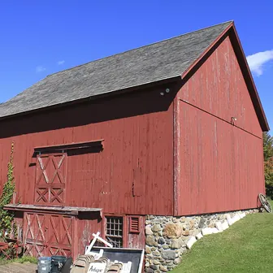 |
barnамбар | Swroche | CC BY-SA 3.0 | файл на Commons |
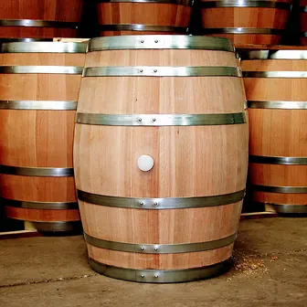 |
barrelбочка | Gerard Prins | CC BY-SA 3.0 | файл на Commons |
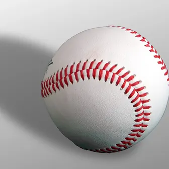 |
baseballбейсбол | Own work | CC BY-SA 3.0 | файл на Commons |
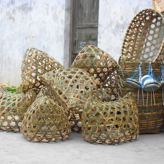 |
basketкорзина | Anna Frodesiak | CC0 | файл на Commons |
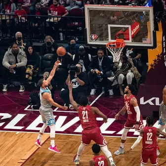 |
basketballбаскетбол | Erik Drost | CC BY 2.0 | файл на Commons |
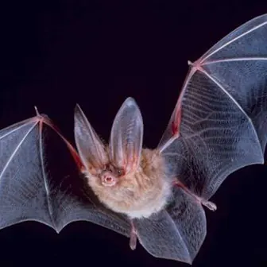 |
batлетучая мышь | PD-USGov, exact author unknown | Public domain | файл на Commons |
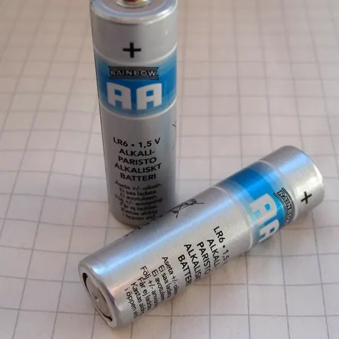 |
batteryбатарея, аккумулятор | Lead holder | CC BY-SA 3.0 | файл на Commons |
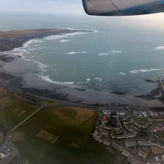 |
bayзалив | Richard Hoare | CC BY-SA 2.0 | файл на Commons |
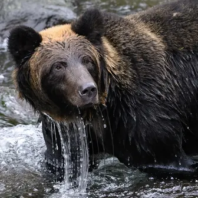 |
bearмедведь | pen_ash | Pixabay Content License | страница на Pixabay |
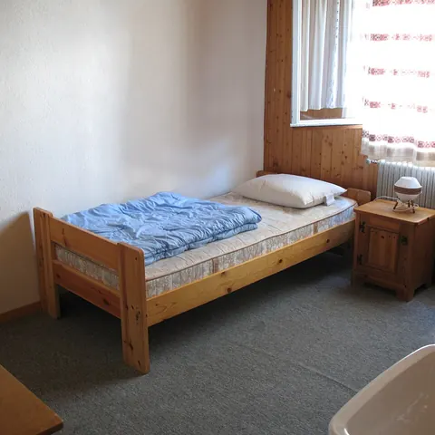 |
bedкровать | Andrew Bossi | CC BY-SA 2.5 | файл на Commons |
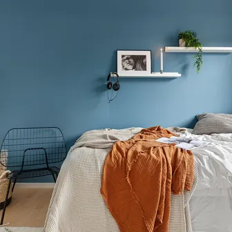 |
bedroomспальня | 23555986 | Pixabay Content License | страница на Pixabay |
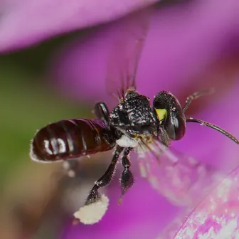 |
beeпчела | Graham Wise from Brisbane, Australia | CC BY 2.0 | файл на Commons |
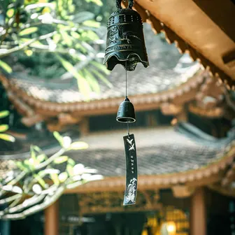 |
bellколокол | Robin23 | Pixabay Content License | страница на Pixabay |
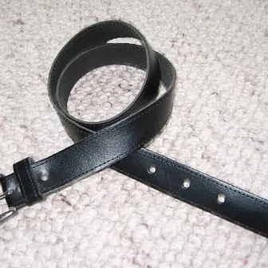 |
beltремень | Hedwig von Ebbel | Public domain | файл на Commons |
 |
bicycleвелосипед | 齐健 from Peking, People's Republic of China | CC BY 2.0 | файл на Commons |
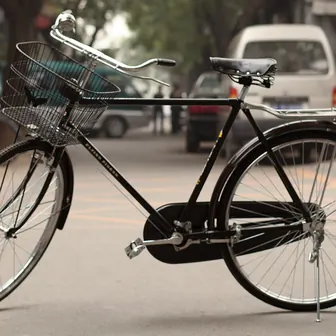 |
bikeвелосипед | 齐健 from Peking, People's Republic of China | CC BY 2.0 | файл на Commons |
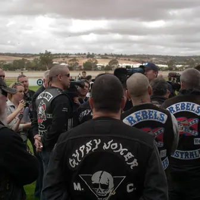 |
bikerбайкер | Roy Lister from Salisbury North, South Australia | CC BY 2.0 | файл на Commons |
| biotechnologyбиотехнология | Ibrahim Khairov | CC BY 4.0 | файл на Commons | |
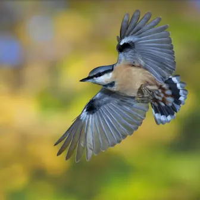 |
birdптица | C. Robiller / naturlichter.de ( Hyla meridionalis ) | CC BY-SA 3.0 | файл на Commons |
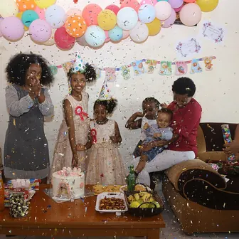 |
birthdayдень рождения | Mbachris | CC BY-SA 4.0 | файл на Commons |
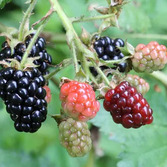 |
blackberryежевика | Ragesoss | CC BY-SA 3.0 | файл на Commons |
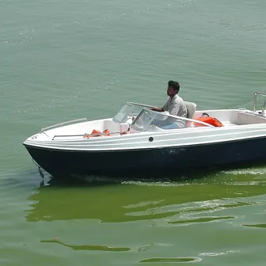 |
boatлодка | Kondicherry | CC BY-SA 3.0 | файл на Commons |
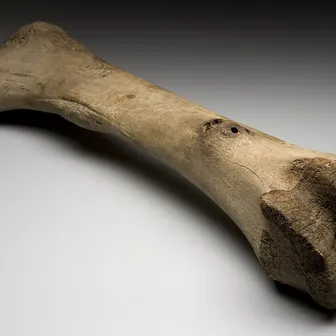 |
boneкость | Wikimedia Commons | CC BY 4.0 | файл на Commons |
| bookкнига | NYC Wanderer (Kevin Eng) | CC BY-SA 2.0 | файл на Commons | |
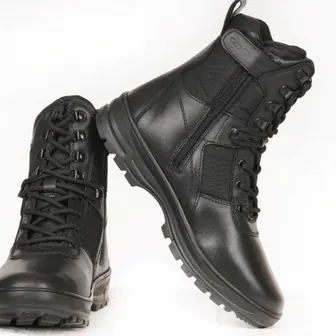 |
bootsботинки, сапоги | Cliff Climbers | CC BY-SA 2.5 | файл на Commons |
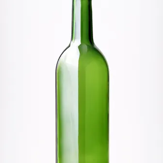 |
bottleбутылка | Aurélien Mole | CC BY-SA 3.0 | файл на Commons |
| boutiqueбутик | boutiquegirlish21 | Pixabay Content License | страница на Pixabay | |
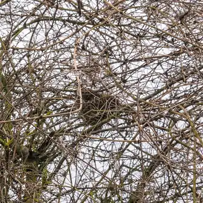 |
branchветка | Trougnouf (Benoit Brummer) | CC BY 4.0 | файл на Commons |
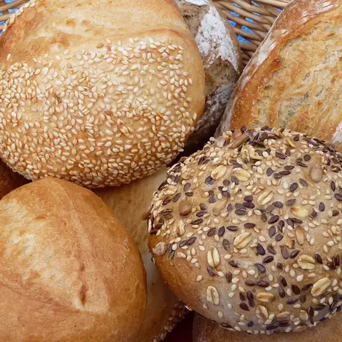 |
breadхлеб | 3268zauber | CC BY-SA 3.0 | файл на Commons |
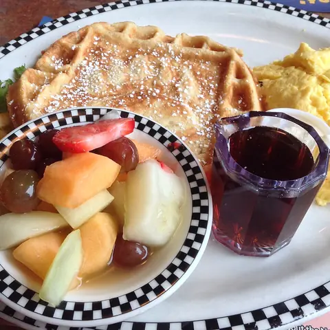 |
breakfastзавтрак | Kiddo27 | CC BY-SA 4.0 | файл на Commons |
| brickкирпич | Andrewlister | Public domain | файл на Commons | |
| bridgeмост | Wikimedia Commons | CC BY-SA 3.0 | файл на Commons | |
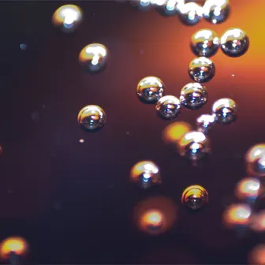 |
bubbleпузырь | en:User:Spiff | Public domain | файл на Commons |
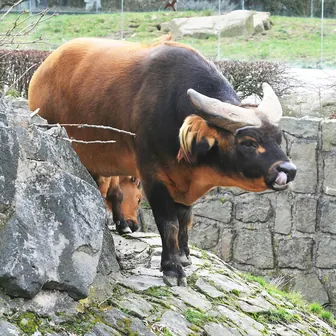 |
buffaloбуйвол | Karelj | Public domain | файл на Commons |
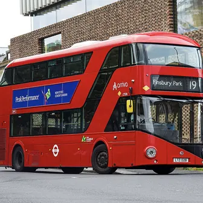 |
busавтобус | SIA321 | CC BY-SA 4.0 | файл на Commons |
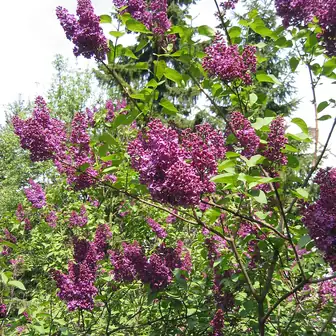 |
bushкуст | Magnus Manske | CC BY 1.0 | файл на Commons |
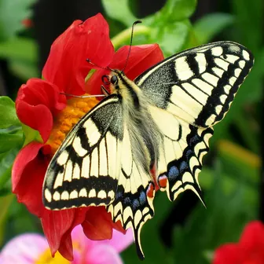 |
butterflyбабочка | fesoj | CC BY 2.0 | файл на Commons |
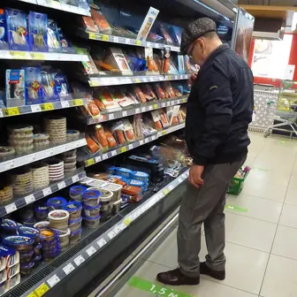 |
buyerпокупатель | IvanA | CC BY-SA 4.0 | файл на Commons |
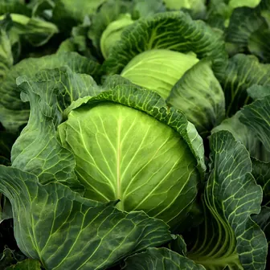 |
cabbageкапуста | ulleo | Pixabay Content License | страница на Pixabay |
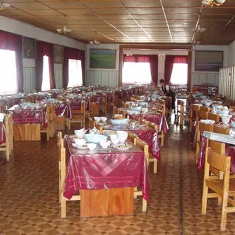 |
cafeteriaкафетерий | DVA | CC BY-SA 3.0 | файл на Commons |
| cageклетка | ignartonosbg | Pixabay Content License | страница на Pixabay | |
| cakeторт, пирожное | Scheinwerfermann | Public domain | файл на Commons | |
| calendarкалендарь | Rantemario | CC BY-SA 4.0 | файл на Commons | |
| cameraфотоаппарат, камера | Kameraprojekt Graz 2015 | CC BY-SA 4.0 | файл на Commons | |
| candleсвеча | LA2 | CC BY-SA 3.0 | файл на Commons | |
| canoeканоэ | Christiaan Briggs | CC BY-SA 3.0 | файл на Commons | |
| carмашина | © M 93 | CC BY-SA 3.0 de | файл на Commons | |
| cardboardкартон | Marek Ślusarczyk ( Tupungato ) Photo portfolio | CC BY 3.0 | файл на Commons | |
| cargoгруз | Slambo at en.wikipedia | CC BY-SA 2.0 | файл на Commons | |
| carpetковёр | Ryj | Public domain | файл на Commons | |
| carrotморковь | Evan-Amos | Public domain | файл на Commons | |
| cartтелега | hbieser | Pixabay Content License | страница на Pixabay | |
| cashierкассир | photo taken by flickr user Young in Panama | CC BY 2.0 | файл на Commons | |
| catкот, кошка | Alvesgaspar | CC BY-SA 3.0 | файл на Commons | |
| cauldronкотёл | Lily15 | CC BY-SA 3.0 | файл на Commons | |
| caveпещера | Dave Bunnell / Under Earth Images | CC BY-SA 2.5 | файл на Commons | |
| chainцепь | Toni Lozano | CC BY 2.0 | файл на Commons | |
| chairстул | Thomas Chippendale | CC0 | файл на Commons | |
| champagneшампанское | bgvjpe | CC BY 2.0 | файл на Commons | |
| channelканал | NakNakNak | Pixabay Content License | страница на Pixabay | |
| chapelчасовня | Diliff | CC BY-SA 3.0 | файл на Commons | |
| cheeseсыр | Wikimedia Commons | CC BY-SA 3.0 | файл на Commons | |
| chemistryхимия | PublicDomainPictures | Pixabay Content License | страница на Pixabay | |
| cherryвишня | spurekar | CC BY 2.0 | файл на Commons | |
| chessшахматы | Alan Light | CC BY-SA 3.0 | файл на Commons | |
| chestсундук | AlejandroLinaresGarcia | CC BY-SA 3.0 | файл на Commons | |
| childhoodдетство | Department of Defense. American Forces Information Service. Defense Visual Information Center. 1994 | Public domain | файл на Commons | |
| chimneyтруба | Adrian Tync | CC BY-SA 4.0 | файл на Commons | |
| cinnamonкорица | Simon A. Eugster | CC BY-SA 3.0 | файл на Commons | |
| circusцирк | whitedaemon | Pixabay Content License | страница на Pixabay | |
| cityгород | Benh LIEU SONG ( Flickr ) | CC BY-SA 2.0 | файл на Commons | |
| classroomкласс | Liz | CC BY 2.0 | файл на Commons | |
| clayглина | wal_172619 | Pixabay Content License | страница на Pixabay | |
| cliffскала | Immanuel Giel | CC BY-SA 3.0 | файл на Commons | |
| clinicклиника | StockSnap | Pixabay Content License | страница на Pixabay | |
| clockчасы (настенные) | Christoph Braun | CC0 | файл на Commons | |
| clothesодежда | JillWellington | Pixabay Content License | страница на Pixabay | |
| cloudоблако, туча | Vyacheslav Argenberg | CC BY 4.0 | файл на Commons | |
| coachтренер | 5132824 | Pixabay Content License | страница на Pixabay | |
| coalуголь | Amcyrus2012 | CC BY 4.0 | файл на Commons | |
| coastберег | Nick Harris | CC BY 2.5 | файл на Commons | |
| coffeeкофе | Bex Walton | CC BY 2.0 | файл на Commons | |
| coinмонета | Michael Sander | CC BY-SA 4.0 | файл на Commons | |
| coldхолодный | Georges Nijs from Diepenbeek, Belgium | CC BY 2.0 | файл на Commons | |
| collegeуниверситет | Tim4403224246 | CC BY-SA 4.0 | файл на Commons | |
| colorцвет | MichaelMaggs | CC BY-SA 3.0 | файл на Commons | |
| columnколонна | APK | CC BY-SA 3.0 | файл на Commons | |
| competeсоревноваться | Stevebidmead | Pixabay Content License | страница на Pixabay | |
| constructionстроительство | Whiteghost.ink | CC BY-SA 4.0 | файл на Commons | |
| cookготовить | The Pocket from Nanjin , China | CC BY 2.0 | файл на Commons | |
| cornзерно | Fir0002 | CC BY-SA 3.0 | файл на Commons | |
| cottageкоттедж | Kenneth Allen | CC BY-SA 2.0 | файл на Commons | |
| couchдиван | Ildar Sagdejev ( Specious ) | CC BY-SA 4.0 | файл на Commons | |
| cowкорова | Kim Hansen | CC BY-SA 3.0 | файл на Commons | |
| coyoteкойот | Yathin S Krishnappa | CC BY-SA 3.0 | файл на Commons | |
| craneжуравль | Fotograf: JeLuF | CC BY-SA 3.0 | файл на Commons | |
| crateящик | ArnoldReinhold | CC BY-SA 3.0 | файл на Commons | |
| creatureсущество | wal_172619 | Pixabay Content License | страница на Pixabay | |
| cricketсверчок | Didier Descouens | CC BY-SA 4.0 | файл на Commons | |
| crowdтолпа | Wikimedia Commons | CC BY 2.5 | файл на Commons | |
| crystalхрусталь | Géry PARENT | Public domain | файл на Commons | |
| cupчашка | freephotocc | Pixabay Content License | страница на Pixabay | |
| cureлекарство | Würfel | CC BY-SA 3.0 | файл на Commons | |
| daisyмаргаритка | Krzysztof Golik | CC BY-SA 4.0 | файл на Commons | |
| damплотина | Wiki Commons users Qurren at https://commons.wikimedia.org/wiki/User:Qurren | CC BY-SA 3.0 | файл на Commons | |
| damageущерб | Ranch9613 | CC0 | файл на Commons | |
| danceтанцевать | Barry Goyette from San Luis Obispo, USA | CC BY 2.0 | файл на Commons | |
| dateфиник | This photography was created by Mariluna . Other photos see here . | CC BY-SA 3.0 | файл на Commons | |
| deerолень | Wikimedia Commons | CC BY-SA 3.0 | файл на Commons | |
| deliveryдоставка | Brateevsky | CC BY-SA 4.0 | файл на Commons | |
| deskстол | John Townsend | CC0 | файл на Commons | |
| detailдеталь | Schekinov Alexey Victorovich | CC BY-SA 4.0 | файл на Commons | |
| diamondалмаз | GrownDiamond | Pixabay Content License | страница на Pixabay | |
| dictionaryсловарь | Langenscheidt | CC BY-SA 4.0 | файл на Commons | |
| dinnerужин | Ɱ | CC BY-SA 3.0 | файл на Commons | |
| directionнаправление | Ghinzo | Pixabay Content License | страница на Pixabay | |
| dirtyгрязный | 652234 | Pixabay Content License | страница на Pixabay | |
| discountскидка | Alvaro A. Novo | CC BY-SA 3.0 | файл на Commons | |
| dishтарелка | JESHOOTS-com | Pixabay Content License | страница на Pixabay | |
| dishwasherпосудомоечная машина | No machine-readable author provided. Piotrus assumed (based on copyright claims). | CC BY-SA 3.0 | файл на Commons | |
| doctorврач | Stethoscopes | CC BY-SA 3.0 | файл на Commons | |
| dogсобака | M. Rehemtulla | CC BY 2.0 | файл на Commons | |
| dressплатье | This file was donated to Wikimedia Commons as part of a project by the Metropolitan Museum of Art . See the Image and Data Resources Open Access Policy | CC0 | файл на Commons | |
| drillсверлить | LeoNeoBoy | Pixabay Content License | страница на Pixabay | |
| driveводить, вести машину | DWS MontagZen | CC BY-SA 4.0 | файл на Commons | |
| dumpпомойка | Ropable | Public domain | файл на Commons | |
| eagleорёл | User:Punetor i Rregullt5 | CC BY-SA 4.0 | файл на Commons | |
| eggяйцо | Horacio Cambeiro | CC BY-SA 4.0 | файл на Commons | |
| elephantслон | kikatani | Pixabay Content License | страница на Pixabay | |
| energyэнергия | Colin | CC BY-SA 3.0 | файл на Commons | |
| envelopeконверт | va703b | Pixabay Content License | страница на Pixabay | |
| equipmentснаряжение | James Bastow | CC BY-SA 2.0 | файл на Commons | |
| eyeглаз | ROTFLOLEB | CC BY-SA 3.0 | файл на Commons | |
| faceлицо | Autisticeditor 20 | CC BY-SA 4.0 | файл на Commons | |
| factoryфабрика | Tama66 | Pixabay Content License | страница на Pixabay | |
| familyсемья | Seattle Municipal Archives from Seattle, WA | CC BY 2.0 | файл на Commons | |
| farmферма | Adrian S Pye | CC BY-SA 2.0 | файл на Commons | |
| fatherпапа, отец | Hripsime Poghosyan | CC BY-SA 4.0 | файл на Commons | |
| faxфакс | Pittigrilli | CC BY-SA 4.0 | файл на Commons | |
| fenceзабор | Wikimedia Commons | Public domain | файл на Commons | |
| festivalфестиваль | Steven Gerner | CC BY-SA 2.0 | файл на Commons | |
| feverтемпература | CDC | Public domain | файл на Commons | |
| fieldполе | matthiasboeckel | Pixabay Content License | страница на Pixabay | |
| filmплёнка | Unknown author Unknown author | CC0 | файл на Commons | |
| fingerпалец | Sciencia58 | CC BY-SA 4.0 | файл на Commons | |
| fishрыба | H. Zell | CC BY-SA 3.0 | файл на Commons | |
| fishingрыбалка | Bernard Gagnon | CC BY-SA 3.0 | файл на Commons | |
| flagфлаг | Tom Page | CC BY-SA 2.0 | файл на Commons | |
| flashlightфонарик | Brownse10 | CC BY-SA 4.0 | файл на Commons | |
| floatплавать | Hp.Baumeler | CC BY-SA 4.0 | файл на Commons | |
| floorпол | Amada44 | CC BY 3.0 | файл на Commons | |
| flowerцветок | Ianaré Sévi | CC BY-SA 3.0 | файл на Commons | |
| flyмуха | Sjonnoh | Public domain | файл на Commons | |
| foodеда | Unknown author Unknown author | Public domain | файл на Commons | |
| forestлес | lubasi | CC BY-SA 2.0 | файл на Commons | |
| fortфорт | John Scofield | CC BY-SA 4.0 | файл на Commons | |
| friendдруг | Jacob Truedson Demitz for Southerly Clubs | Public domain | файл на Commons | |
| fruitфрукт | روتانا | CC BY 4.0 | файл на Commons | |
| galaxyгалактика | The Hubble Heritage Team (AURA/STScI/NASA) NASA Headquarters - Greatest Images of NASA (NASA-HQ-GRIN) | Public domain | файл на Commons | |
| galleryгалерея | Wikimedia Commons | CC BY-SA 3.0 | файл на Commons | |
| gameигра | Pexels | Pixabay Content License | страница на Pixabay | |
| garbageмусор | Flandria12 | CC BY-SA 4.0 | файл на Commons | |
| gardenсад | King of Hearts | CC BY-SA 3.0 | файл на Commons | |
| gateкалитка | Neoclassicism Enthusiast | CC BY-SA 4.0 | файл на Commons | |
| glassстекло | rawpixel.com | CC0 | файл на Commons | |
| glovesперчатки | Kippelboy | CC BY-SA 3.0 | файл на Commons | |
| gogglesзащитные очки | jarmoluk | Pixabay Content License | страница на Pixabay | |
| golfгольф | Lilrizz | CC0 | файл на Commons | |
| grainзерно | Thagadooran | CC BY-SA 3.0 | файл на Commons | |
| grandfatherдедушка | Bogdanov-62 | CC BY-SA 3.0 | файл на Commons | |
| grassтрава | Rasbak | CC BY-SA 3.0 | файл на Commons | |
| gravelгравий | Stan Zurek | CC BY-SA 3.0 | файл на Commons | |
| guitarгитара | User:Martin Möller Talk | CC BY-SA 2.0 de | файл на Commons | |
| gymспортзал | Jorge Royan | CC BY-SA 3.0 | файл на Commons | |
| gymnasticsгимнастика | Fernando Frazão/Agência Brasil | CC BY 2.0 | файл на Commons | |
| hairволос | 7760815 | Pixabay Content License | страница на Pixabay | |
| hammerмолот | Wolfgang Sauber | CC BY-SA 3.0 | файл на Commons | |
| headphonesнаушники | http://muzyczny.pl | CC BY-SA 4.0 | файл на Commons | |
| heatherвереск | Kurt Kulac | CC BY-SA 3.0 | файл на Commons | |
| helmetшлем | Jérôme Greco from la louviere, Belgique | CC BY 2.0 | файл на Commons | |
| hideпрятать | Sunriseforever | Pixabay Content License | страница на Pixabay | |
| hillхолм | Rics1299 | CC BY-SA 3.0 | файл на Commons | |
| hitchhikeпутешествовать автостопом | DanielBrachlow | Pixabay Content License | страница на Pixabay | |
| hoodкапот | User Ballista on en.wikipedia | CC BY-SA 3.0 | файл на Commons | |
| hornрог | Museum of Fine Arts, Boston | CC BY 2.0 | файл на Commons | |
| horseлошадь | Nokota_Horses.jpg : François Marchal derivative work: Dana boomer ( talk ) | CC BY-SA 3.0 | файл на Commons | |
| hospitalбольница | H501zalc | CC BY-SA 3.0 | файл на Commons | |
| hotelотель, гостиница | Château Jeanne & The Forest | CC0 | файл на Commons | |
| hourglassпесочные часы | This file was donated to Wikimedia Commons as part of a project by the Metropolitan Museum of Art . See the Image and Data Resources Open Access Policy | CC0 | файл на Commons | |
| houseдом | No machine-readable author provided. Boereck assumed (based on copyright claims). | Public domain | файл на Commons | |
| hugобъятие | Braden Kowitz | CC BY-SA 2.0 | файл на Commons | |
| husbandмуж | sonamabcd | Pixabay Content License | страница на Pixabay | |
| iceлёд | Sharon Mollerus | CC BY 2.0 | файл на Commons | |
| impecuniousбезденежный, нуждающийся | Tumisu | Pixabay Content License | страница на Pixabay | |
| inkчернила | Hannes Grobe ( talk ) | CC BY 3.0 | файл на Commons | |
| innгостиница | Smallbones | Public domain | файл на Commons | |
| inspectorинспектор | Mos.ru | CC BY 4.0 | файл на Commons | |
| instrumentинструмент | Per Erik Strandberg sv:User:PER9000 | CC BY-SA 2.5 | файл на Commons | |
| interviewсобеседование | U.S. Fish and Wildlife Service Headquarters | CC BY 2.0 | файл на Commons | |
| inventorизобретатель | Uploaded first to de.wikipedia : 18:30, 27. Apr 2004 . . Avatar (Diskussion) . . 600 x 593 (43672 Byte) (Dave Warren - Erfinder des Flugschreiber mit einem Prototyp) | Public domain | файл на Commons | |
| jacketкуртка, пиджак | Victor Vizu | CC BY-SA 3.0 | файл на Commons | |
| jockeyжокей | Citrus Zest | Public domain | файл на Commons | |
| judgeсудья | Jeroen Bouman | Public domain | файл на Commons | |
| juiceсок | Agricultural Research Service | Public domain | файл на Commons | |
| jumpпрыгать | Stephan Sprinz | CC BY-SA 4.0 | файл на Commons | |
| jungleджунгли | Dmitry Makeev | CC BY-SA 4.0 | файл на Commons | |
| keyключ | Trougnouf | CC BY 4.0 | файл на Commons | |
| keyboardклавиатура | Dmitry Nosachev | CC BY-SA 4.0 | файл на Commons | |
| kingкороль | Beckstet | CC BY-SA 3.0 | файл на Commons | |
| kitchenкухня | Jean-Pierre Dalbéra from Paris, France | CC BY 2.0 | файл на Commons | |
| knifeнож | Carter Cutlery | CC BY 3.0 | файл на Commons | |
| lakeозеро | No machine-readable author provided. Marius~commonswiki assumed (based on copyright claims). | CC BY-SA 3.0 | файл на Commons | |
| lanternфонарь | Wikimedia Commons | CC BY-SA 2.0 | файл на Commons | |
| laptopноутбук | Top left: Premeditated Top right: Tom Page Bottom left and right: Maurizio Pesce | CC BY 2.0 | файл на Commons | |
| laserлазер | ESO/A. Ghizzi Panizza ( www.albertoghizzipanizza.com ) | CC BY 4.0 | файл на Commons | |
| lateпоздно, поздний | BrickBard | Pixabay Content License | страница на Pixabay | |
| lavenderлаванда | Hans | Pixabay Content License | страница на Pixabay | |
| lawnгазон | Berglund from Richardson, Texas, USA | CC BY 2.0 | файл на Commons | |
| leafлист | Krzysztof P. Jasiutowicz | CC BY-SA 3.0 | файл на Commons | |
| leatherкожа | Scott Bauer | Public domain | файл на Commons | |
| lectureлекция | Kurt Barnett | CC BY-SA 3.0 | файл на Commons | |
| lemonлимон | Elena Chochkova | CC BY-SA 4.0 | файл на Commons | |
| leopardлеопард | Sumeet Moghe | CC BY-SA 4.0 | файл на Commons | |
| lessonурок | sobima | Pixabay Content License | страница на Pixabay | |
| leverрычаг | Amybutri | Pixabay Content License | страница на Pixabay | |
| lightningмолния | Maxime Raynal from France | CC BY 2.0 | файл на Commons | |
| lilyлилия | Stan Shebs | CC BY-SA 3.0 | файл на Commons | |
| logбревно | Андрей Перцев | CC0 | файл на Commons | |
| lookпосмотреть | OnzeCreativitijd | Pixabay Content License | страница на Pixabay | |
| loverлюбовник | yamabon | Pixabay Content License | страница на Pixabay | |
| luggageбагаж | TonyTheTiger | CC BY-SA 4.0 | файл на Commons | |
| mallторговый центр | User Arpingstone on en.wikipedia | Public domain | файл на Commons | |
| mannequinманекен | Colin Rose | CC BY 2.0 | файл на Commons | |
| mapкарта | MasterTux | Pixabay Content License | страница на Pixabay | |
| marmaladeджем | Amanda Slater | CC BY-SA 2.0 | файл на Commons | |
| marryвыходить замуж | Will | CC BY-SA 2.0 | файл на Commons | |
| maskмаска | Photo: Andreas Praefcke | CC BY 3.0 | файл на Commons | |
| masonкаменщик | Brice Blondel for HDPTCAR ( hdptcar.net ) | CC BY 2.0 | файл на Commons | |
| massageмассаж | IQP | CC BY-SA 3.0 | файл на Commons | |
| maternalматеринский | wjgomes | Pixabay Content License | страница на Pixabay | |
| mathematicsматематика | Pexels | Pixabay Content License | страница на Pixabay | |
| menuменю | Andy Li | CC0 | файл на Commons | |
| mercuryртуть | Bionerd | CC BY 3.0 | файл на Commons | |
| microscopeмикроскоп | Ann 2000 | CC BY-SA 4.0 | файл на Commons | |
| milkмолоко | NIAID | CC BY 2.0 | файл на Commons | |
| mobileмобильный | Jojhnjoy | Public domain | файл на Commons | |
| moneyденьги | Avij ( talk · contribs ) | Public domain | файл на Commons | |
| monthмесяц | Gunboat_Willie | Pixabay Content License | страница на Pixabay | |
| morningутро | Olga Ernst | CC BY-SA 4.0 | файл на Commons | |
| motorcycleмотоцикл | Mr.choppers | CC BY-SA 4.0 | файл на Commons | |
| mountainгора | Luca Galuzzi ( Lucag ) | CC BY-SA 2.5 | файл на Commons | |
| mouseмышь | Rasbak | CC BY-SA 3.0 | файл на Commons | |
| mudгрязь | Ildar Sagdejev ( Specious ) | CC BY-SA 4.0 | файл на Commons | |
| museumмузей | LuisCG11 | CC BY-SA 4.0 | файл на Commons | |
| musicмузыка | Սէրուժ Ուրիշեան (Serouj Ourishian) | CC BY-SA 3.0 | файл на Commons | |
| necklaceколье | Lourdeschr | CC BY-SA 4.0 | файл на Commons | |
| needleиголка | Pavel Krok | CC BY-SA 2.5 | файл на Commons | |
| negotiateвести переговоры | United States Department of State | Public domain | файл на Commons | |
| neighborhoodрайон, окрестности | GK tramrunner229 | CC BY-SA 3.0 | файл на Commons | |
| nestгнездо | HelgaKa | Pixabay Content License | страница на Pixabay | |
| nightночь | Benh LIEU SONG | CC BY-SA 4.0 | файл на Commons | |
| nightclubночной клуб | Malagalabombonera | CC BY-SA 4.0 | файл на Commons | |
| noseнос | LHOON | CC BY-SA 2.0 | файл на Commons | |
| notebookблокнот | theilr | CC BY-SA 2.0 | файл на Commons | |
| notepadблокнот | L.Marie | CC BY 2.0 | файл на Commons | |
| nurseмедсестра, медбрат | Linda Bartlett (Photographer) | Public domain | файл на Commons | |
| nutmegмускатный орех | Herusutimbul | CC BY-SA 4.0 | файл на Commons | |
| observatoryобсерватория | Adusha | CC BY-SA 3.0 | файл на Commons | |
| oilнефть | Nefronus | CC0 | файл на Commons | |
| oliveоливка | en:User:Nickfraser | CC BY-SA 3.0 | файл на Commons | |
| orangeапельсин | Luis Miguel Bugallo Sánchez ( Lmbuga Commons )( Lmbuga Galipedia ) Publicada por/ Publish by : Luis Miguel Bugallo Sánchez | CC BY-SA 3.0 | файл на Commons | |
| orchidорхидея | Rohit Naniwadekar | CC BY-SA 4.0 | файл на Commons | |
| paintрисовать красками | Joyful spherical creature | CC BY-SA 4.0 | файл на Commons | |
| pantsбрюки | Dressed_for_summer.jpg : Ed Yourdon derivative work: Themightyquill ( talk ) | CC BY-SA 2.0 | файл на Commons | |
| papayaпапайя | varintorn | Pixabay Content License | страница на Pixabay | |
| paperбумага | Niklas Bildhauer (who also is User gerolsteiner91 . | CC BY-SA 2.0 | файл на Commons | |
| parentопекун | Xandra_Iryna | Pixabay Content License | страница на Pixabay | |
| parkпарк | File:Halleyparknovember.jpg : Celco85 derivative work: Georgfotoart | CC BY-SA 4.0 | файл на Commons | |
| passengerпассажир | TriviaKing ( talk )DWS | CC BY-SA 3.0 | файл на Commons | |
| passportпаспорт | Normadic at English Wikipedia , User:Quistnix , बिजय पोख्रेल , and the PRC Government (as indicated in the file for the PRC passport) | CC BY-SA 4.0 | файл на Commons | |
| pavementмостовая | Vitold Muratov | CC BY-SA 3.0 | файл на Commons | |
| paymentоплата | Lidongyun | Public domain | файл на Commons | |
| pearгруша | Keith Weller | Public domain | файл на Commons | |
| peckклевать | AngelaQuinn | Pixabay Content License | страница на Pixabay | |
| penручка | Vadim Zhuravlev | Public domain | файл на Commons | |
| pencilкарандаш | Original uploader was Dmgerman at en.wikipedia | CC BY 3.0 | файл на Commons | |
| pepperперец | Daria-Yakovleva | Pixabay Content License | страница на Pixabay | |
| pharmacyаптека | MDFrescuerYouTube | Pixabay Content License | страница на Pixabay | |
| phoenixфеникс | micapapillon95 | Pixabay Content License | страница на Pixabay | |
| photographerфотограф | Mhazandaren | CC BY 4.0 | файл на Commons | |
| pieceкусок | Daria-Yakovleva | Pixabay Content License | страница на Pixabay | |
| pigсвинья | kallerna | CC BY-SA 4.0 | файл на Commons | |
| pillowподушка | Amin | CC BY-SA 4.0 | файл на Commons | |
| pinбулавка | HKartphotography | Pixabay Content License | страница на Pixabay | |
| pineсосна | Vlad & Marina Butsky on Flickr | CC BY 2.0 | файл на Commons | |
| pineappleананас | Suniltg at Malayalam Wikipedia | CC BY 3.0 | файл на Commons | |
| pizzaпицца | igorovsyannykov | CC0 | файл на Commons | |
| planetпланета | CactiStaccingCrane | CC BY-SA 4.0 | файл на Commons | |
| plateтарелка | Chelsea porcelain factory | CC0 | файл на Commons | |
| plumслива | Ivar Leidus | CC BY-SA 4.0 | файл на Commons | |
| pollutionзагрязнение | Janak Bhatta | CC BY-SA 4.0 | файл на Commons | |
| ponchoпончо | MARXCINE | Pixabay Content License | страница на Pixabay | |
| poolбассейн | ignartonosbg | Pixabay Content License | страница на Pixabay | |
| portпорт | cezzie901 | CC BY 2.0 | файл на Commons | |
| porterносильщик | Dmitry A. Mottl | CC BY-SA 3.0 | файл на Commons | |
| portfolioпортфель | Varano | CC BY-SA 3.0 | файл на Commons | |
| positionпозиция | AndiP | Pixabay Content License | страница на Pixabay | |
| posterпостер | Squaredone | Pixabay Content License | страница на Pixabay | |
| potкастрюля | Pogrebnoj-Alexandroff | CC BY-SA 3.0 | файл на Commons | |
| potatoкартошка | Scott Bauer, USDA ARS | Public domain | файл на Commons | |
| pouchсумка | Hooemz Ming Shum | CC BY-SA 4.0 | файл на Commons | |
| powderпорошок | frankspandl | Pixabay Content License | страница на Pixabay | |
| priceцена | JaHo | Pixabay Content License | страница на Pixabay | |
| printпечатать | SweetMellowChill | Pixabay Content License | страница на Pixabay | |
| prisonerзаключённый | Rainerzufall1234 | CC BY-SA 4.0 | файл на Commons | |
| pubкабак | Mmberney | CC0 | файл на Commons | |
| pumpнасос | KVDP | Public domain | файл на Commons | |
| rabbitкролик | JM Ligero Loarte | CC BY 3.0 | файл на Commons | |
| raceгонка | Jérémy-Günther-Heinz Jähnick | CC BY-SA 3.0 | файл на Commons | |
| railwayжелезная дорога | Carl Chapman from Phoenix | CC BY-SA 2.0 | файл на Commons | |
| rainдождь | Tomascastelazo | CC BY-SA 3.0 | файл на Commons | |
| religionрелигия | jpeter2 | Pixabay Content License | страница на Pixabay | |
| rescueспасать | René Kieselmann rmk (Bergwacht Schwarzwald e.V., BWS) | CC BY-SA 2.0 de | файл на Commons | |
| restотдых | Vitold Muratov | CC BY-SA 4.0 | файл на Commons | |
| riceрис | Hannahdownes | CC BY-SA 4.0 | файл на Commons | |
| rideездить | SplitShire | Pixabay Content License | страница на Pixabay | |
| riverрека | Basile Morin | CC BY-SA 4.0 | файл на Commons | |
| roadдорога | Img by Calvin Teo | CC BY-SA 3.0 | файл на Commons | |
| robinмалиновка | Gruendercoach | Pixabay Content License | страница на Pixabay | |
| roofкрыша | Foto: Jonn Leffmann | CC BY 3.0 | файл на Commons | |
| roosterпетух | dendoktoor | Pixabay Content License | страница на Pixabay | |
| ropeверёвка | Ji-Elle | CC BY-SA 3.0 | файл на Commons | |
| rubberрезина | geraldoswald62 | Pixabay Content License | страница на Pixabay | |
| rulerлинейка | Geof | CC BY-SA 3.0 | файл на Commons | |
| runбегать | Chris Hunkeler | CC BY-SA 2.0 | файл на Commons | |
| sailingпарусный спорт | RThiele | CC BY-SA 3.0 | файл на Commons | |
| saladсалат | Couleur | Pixabay Content License | страница на Pixabay | |
| salmonлосось | Hans-Petter Fjeld | CC BY-SA 2.5 | файл на Commons | |
| saltсоль | monicore | Pixabay Content License | страница на Pixabay | |
| sandпесок | Luca Galuzzi ( Lucag ) | CC BY-SA 2.5 | файл на Commons | |
| sandwichбутерброд | Jami430 | CC BY-SA 4.0 | файл на Commons | |
| sashimiсасими | 663highland | CC BY-SA 4.0 | файл на Commons | |
| sauceсоус | Cryst(a)l , Bloomington, USA | CC BY 2.0 | файл на Commons | |
| scaffoldлеса | Felalo | CC BY-SA 4.0 | файл на Commons | |
| scarfшарф | https://www.kaschmirprodukte.de | CC BY-SA 4.0 | файл на Commons | |
| schoolшкола | Nikride | CC BY-SA 4.0 | файл на Commons | |
| scoreзабивать; счёт | leighklotz | CC BY 2.0 | файл на Commons | |
| seaморе | Alina Zienowicz Ala z | CC BY-SA 3.0 | файл на Commons | |
| seedсемена | Alexander Klepnev | CC BY 4.0 | файл на Commons | |
| serveподача | Zorro2212 | CC BY-SA 3.0 | файл на Commons | |
| serverсервер | No machine-readable author provided. SolarKennedy~commonswiki assumed (based on copyright claims). | Public domain | файл на Commons | |
| shamrockтрилистник | soramang | Pixabay Content License | страница на Pixabay | |
| sharkакула | NOAA Photo Library | CC BY 2.0 | файл на Commons | |
| shelfполка | Mgoutsidou | CC BY-SA 3.0 | файл на Commons | |
| shirtрубашка | Author of the photograph unknown. | CC BY-SA 3.0 | файл на Commons | |
| shoeботинок, туфля | Birgit Brånvall | CC BY 3.0 no | файл на Commons | |
| shoelaceшнурок | Jonas Bergsten | Public domain | файл на Commons | |
| shopмагазин | Billy Hathorn | CC BY-SA 3.0 | файл на Commons | |
| sieveрешето | User:BMK | CC BY-SA 3.0 | файл на Commons | |
| singпеть | Owen Lucas from Bath, UK | Public domain | файл на Commons | |
| skiлыжа | Josefka | Pixabay Content License | страница на Pixabay | |
| skirtюбка | zhuwei06191973 | Pixabay Content License | страница на Pixabay | |
| skyнебо | Natubico | CC BY-SA 3.0 | файл на Commons | |
| sleepспать | Michael Nutt from New York, US | CC BY-SA 2.0 | файл на Commons | |
| smallмаленький | The original uploader was Elfer at English Wikipedia . | CC BY-SA 3.0 | файл на Commons | |
| smileулыбка | StockSnap | Pixabay Content License | страница на Pixabay | |
| smileyсмайлик | Alexas_Fotos | Pixabay Content License | страница на Pixabay | |
| snowснег | Пивовар Павло | CC BY-SA 4.0 | файл на Commons | |
| sockносок | Loggie-log | Public domain | файл на Commons | |
| soilпочва | HolgerK at English Wikipedia | Public domain | файл на Commons | |
| soupсуп | Petar Milošević | CC BY-SA 4.0 | файл на Commons | |
| speedскорость | Roy Egloff | CC BY-SA 4.0 | файл на Commons | |
| spinвертеться | picsbyjameslee | Pixabay Content License | страница на Pixabay | |
| spoonложка | Donovan Govan. | CC BY-SA 3.0 | файл на Commons | |
| sportспорт | David W. Carmichael | CC BY-SA 3.0 | файл на Commons | |
| stadiumстадион | A Cricket Premi | CC BY-SA 4.0 | файл на Commons | |
| standстоять | Vyacheslav Argenberg | CC BY 4.0 | файл на Commons | |
| stationстанция, вокзал | Ludvig14 | CC BY-SA 4.0 | файл на Commons | |
| stomachжелудок | TC-TORRES | Pixabay Content License | страница на Pixabay | |
| storageхранение | JMORGANSELFSTOR | CC BY-SA 4.0 | файл на Commons | |
| stormгроза, буря | Arnold Paul | CC BY-SA 2.5 | файл на Commons | |
| streamручей | Leif Jørgensen | CC BY-SA 4.0 | файл на Commons | |
| streetулица | Onofre_Bouvila. | CC BY 2.5 | файл на Commons | |
| studentстудент | Mettevanderheide | CC BY-SA 4.0 | файл на Commons | |
| styleстиль | danielsampaioneto | Pixabay Content License | страница на Pixabay | |
| sugarсахар | Romain Behar | Public domain | файл на Commons | |
| summerлето | Luc Viatour | CC BY-SA 3.0 | файл на Commons | |
| sunсолнце | Matúš Motlo | CC BY-SA 4.0 | файл на Commons | |
| supermarketсупермаркет | NYC Guru | CC BY-SA 4.0 | файл на Commons | |
| surfприбой | No machine-readable author provided. Cantus assumed (based on copyright claims). | Public domain | файл на Commons | |
| surgeonхирург | Pfree2014 | CC BY-SA 4.0 | файл на Commons | |
| surveillanceнаблюдение | Paweł Zdziarski | CC BY 2.5 | файл на Commons | |
| swimплавать | The original uploader was McSmit at Dutch Wikipedia . | CC BY-SA 3.0 | файл на Commons | |
| tacoтако | Larry Miller | CC BY-SA 2.0 | файл на Commons | |
| tapeлента | Japanwelt | CC BY-SA 3.0 | файл на Commons | |
| tattooтатуировка | Bernhard Hanakam | CC BY-SA 3.0 | файл на Commons | |
| taxiтакси | Vauxford | CC BY-SA 4.0 | файл на Commons | |
| teaчай | Difference engine | CC BY-SA 4.0 | файл на Commons | |
| telephoneтелефон | Berthold Werner | CC BY-SA 3.0 | файл на Commons | |
| televisionтелевидение | Wags05 at English Wikipedia | Public domain | файл на Commons | |
| temperatureтемпература | Anonimski | CC BY-SA 3.0 | файл на Commons | |
| tenдесять | 海豚1 | CC BY-SA 4.0 | файл на Commons | |
| tennisтеннис | Brendan Dennis | CC BY-SA 3.0 | файл на Commons | |
| tentпалатка | JJ Harrison ( https://www.jjharrison.com.au/ ) | CC BY-SA 3.0 | файл на Commons | |
| terminalтерминал | JESHOOTS-com | Pixabay Content License | страница на Pixabay | |
| testтест | analogicus | Pixabay Content License | страница на Pixabay | |
| threeтри | Alexas_Fotos | Pixabay Content License | страница на Pixabay | |
| throwбросать | Presidential Press and Information Office | CC BY 4.0 | файл на Commons | |
| tigerтигр | Charles J. Sharp | CC BY-SA 4.0 | файл на Commons | |
| toadжаба | Kuebi = Armin Kübelbeck | CC BY-SA 3.0 | файл на Commons | |
| toastтост | Dheera Venkatraman | CC BY-SA 3.0 | файл на Commons | |
| toeпалец | Stoneisland24 | CC0 | файл на Commons | |
| toiletтуалет | Amin | CC BY-SA 4.0 | файл на Commons | |
| tongueязык | Mahdiabbasinv | CC BY-SA 4.0 | файл на Commons | |
| tornadoсмерч | Justin Hobson ( Justin1569 at English Wikipedia ) | CC BY-SA 3.0 | файл на Commons | |
| touchтрогать | 1857643 | Pixabay Content License | страница на Pixabay | |
| towerбашня | Kakidai | CC BY-SA 3.0 | файл на Commons | |
| townгород | Ma_Frank | Pixabay Content License | страница на Pixabay | |
| toyигрушка | Pexels | Pixabay Content License | страница на Pixabay | |
| trafficдорожное движение, пробки | Ken Lund from Reno, Nevada, USA | CC BY-SA 2.0 | файл на Commons | |
| treasureсокровище | Unknown author Unknown author | CC BY-SA 3.0 | файл на Commons | |
| treeдерево | menergo | CC BY-SA 3.0 | файл на Commons | |
| tunnelтуннель | Marc Mongenet | CC BY-SA 4.0 | файл на Commons | |
| twoдва | moshehar | Pixabay Content License | страница на Pixabay | |
| umbrellaзонт | MONNIN Jacques | CC BY-SA 3.0 | файл на Commons | |
| vacuumвакуум | jarmoluk | Pixabay Content License | страница на Pixabay | |
| valleyдолина | Wikimedia Commons | CC BY-SA 3.0 | файл на Commons | |
| vanфургон | Vauxford | CC BY-SA 4.0 | файл на Commons | |
| vehicleтранспортное средство | Bill Nicholls | CC BY-SA 2.0 | файл на Commons | |
| vendorпродавец | Marcus Böhmer | CC BY-SA 4.0 | файл на Commons | |
| villaвилла | sailko | CC BY-SA 3.0 | файл на Commons | |
| villageдеревня | Bin im Garten | CC BY-SA 3.0 | файл на Commons | |
| volunteerдоброволец | Augustas Didžgalvis | CC BY-SA 4.0 | файл на Commons | |
| walletкошелёк | The original uploader was TheArmadillo at English Wikipedia .. Uploaded to Commons by Körnerbrötchen . | CC BY-SA 3.0 | файл на Commons | |
| walnutорех | Ivar Leidus | CC BY-SA 4.0 | файл на Commons | |
| walrusморж | Nixette | CC BY-SA 4.0 | файл на Commons | |
| washмыть, стирать | Bill Branson (Photographer) | Public domain | файл на Commons | |
| waterвода | Josh Estey/AusAID | CC BY 2.0 | файл на Commons | |
| webcamвеб-камера | Masahiko OHKUBO from Kobe, Japan | CC BY 2.0 | файл на Commons | |
| wheelколесо | Bybbisch94, Christian Gebhardt | CC BY-SA 4.0 | файл на Commons | |
| whistleсвисток | Zephyris at English Wikipedia | CC BY-SA 3.0 | файл на Commons | |
| windowокно | Shahadusadik | CC BY-SA 4.0 | файл на Commons | |
| winterзима | Ernst Vikne | CC BY-SA 2.0 | файл на Commons | |
| wizardволшебник | Wikimedia Commons | CC BY-SA 2.5 | файл на Commons | |
| womanженщина | John Ragai | CC BY 2.0 | файл на Commons | |
| woodдерево | Anonimski | CC0 | файл на Commons | |
| woodpeckerдятел | Joshlaymon | CC BY-SA 3.0 | файл на Commons | |
| workerработник | Howard R. Hollem | Public domain | файл на Commons | |
| workshopмастерская | Tom Murphy VII | Public domain | файл на Commons | |
| yarnпряжа | Sarah Stierch | CC BY 4.0 | файл на Commons | |
| yogurtйогурт | No machine-readable author provided. Rainer Zenz assumed (based on copyright claims). | CC BY-SA 3.0 | файл на Commons | |
| zebraзебра | RosZie | Pixabay Content License | страница на Pixabay | |
| zooзоопарк | Jeff Buck | CC BY-SA 2.0 | файл на Commons |